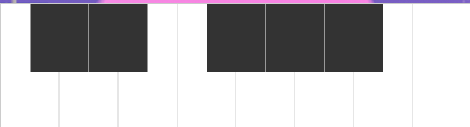

| Component | Function | Component | Function |
|---|---|---|---|
| Step sequencer. User can select grid by clicking. | Play the rhythm melody predicted according to the rhythm input by the sequencer. (Each click will produce different results.) | ||
|  | A 8-key pinao. User can triggle by click or keyboard. | Loop the predicted rhythm melody. | |
| Control the sequencer play. | Set how many steps each quarter note of the generated predicted melody will be divided. | ||
| Setting the BPM of the sequencer. | Set how many steps of the predicted melody. | ||
| Setting the volume of the sequencer. | Clean the input rhythm generated by the sequencer. | ||
|
If the web page loads slowly, try another browser. The recommanded browser is Firefox. If you want to play, you can create a rhythm through the sequencer, click the play button to play, and control the piano with the keyboard ♥ If you want to generate predictive music, please pay attention to the following points: 1.Please set the 'pre_perQuarter' and 'pre_stepsNum' firstly. 2.Click 'predict' button after play the sequencer. The prediction time may take a few seconds. 3.Click 'loop' button after click 'predict' button. It may take some time. Depends on the size of the generated predicted melody. |
|||